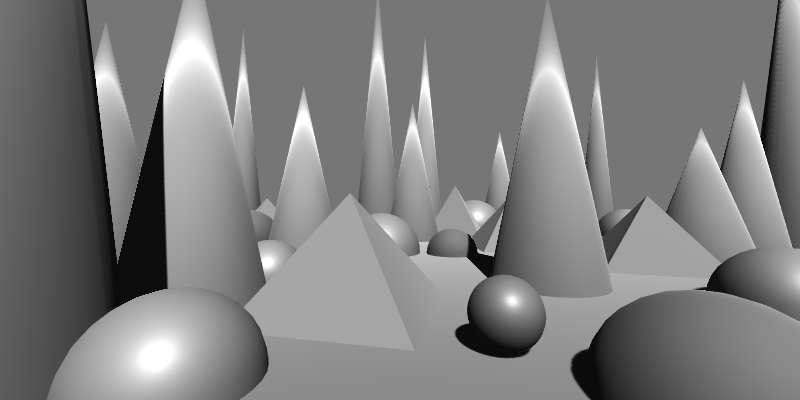

Effects reference: Common

This image shows the original scene without any post processing.
Add Texture
Adds a texture (remapped to specified min amd max) to the image.
| Property | Range | Description |
|---|---|---|
| Overlay Texture | 🔳 | The texture image to add. |
| Min | [-1, 1] | The minimum value to remap the texture to. |
| Max | [-1, 1] | The maximum value to remap the texture to. |
Tip
To ignore a channel, make the two values equal for that channel.
For example, Min = (-.1, -.1, -.1, 0) and Max = (.1, .1, .1, 0) will leave
the alpha channel in tact.

Adjust Gamma
Adjust the gamma of the image.
| Property | Range | Description |
|---|---|---|
| Gamma | (0, ∞) | When 1.0, no change is made. Values less than 1.0 darken the image, while values greater than 1.0 lighten it. |


Bilateral Filter
Smooths and denoises the image while preserving edges, by combining spatial proximity with color similarity. Non-edge regions become soft and clean, while sharp features remain intact.
Separable Properties
| Properties | Range | Description |
|---|---|---|
| Kernel Size | [0, ∞) | The number of pixels sampled. |
| KernelOffset | (-∞, ∞) | Where the kernel should start relative to the pixel. This is set by the shader internally to center kernels (even-sized kernels are 0.5 to the right of the center). |
| Jump Size | (0, ∞) | Multiplies the sampling step size. Use values greater than 1 for faster, softer blurs. |
| Direction | — | The blur direction (1,0) for horizontal, (0,1) for vertical. Internally set by the renderer. |
Tip
Increasing the Jump Size can be a cheap way to fake a bigger kernel, but it does not always work.
Other Properties
| Property | Range | Description |
|---|---|---|
| Spatial Sigma | (0, ∞) | Controls how strongly the filter considers spatial distance. Larger values spread influence farther. |
| Range Sigma | (0, 1) | Controls sensitivity to color differences. Lower values preserve edges more strongly. |

Tip
- Use a small Range Sigma to keep edges crisp while denoising flat regions.
- Increase Spatial Sigma for broader smoothing.
- This filter works best on noisy images or stylized materials where texture detail must be preserved around edges.
Blend Texture
Blends an overlay texture with the image based on its alpha and the specified opacity.
| Property | Range | Description |
|---|---|---|
| Overlay Texture | 🔳 | The texture to blend with the image. The original alpha is respected. |
| Opacity | [0, 1] | Controls the strength of the blend. A value of 0 shows only the original image, while 1 applies the overlay fully (modulated by the overlay’s alpha). |
Tip
- Use this for setting constant, full-screen textures (with opacity 1). This is useful for debugging > or tweaking post effects.
- This is also useful to add noise, an important ingredient in many effects.

Box Blur
Applies a uniform blur by averaging samples.
Separable Properties
| Properties | Range | Description |
|---|---|---|
| Kernel Size | [0, ∞) | The number of pixels sampled. |
| KernelOffset | (-∞, ∞) | Where the kernel should start relative to the pixel. This is set by the shader internally to center kernels (even-sized kernels are 0.5 to the right of the center). |
| Jump Size | (0, ∞) | Multiplies the sampling step size. Use values greater than 1 for faster, softer blurs. |
| Direction | — | The blur direction (1,0) for horizontal, (0,1) for vertical. Internally set by the renderer. |
Tip
Increasing the Jump Size can be a cheap way to fake a bigger kernel, but it does not always work.

Convex Hull Map
Maps each pixel’s color toward a set of primary colors using iterative convex‐hull projection. This effect gradually shifts colors toward the provided primaries, producing posterized, clustered, or palette–constrained looks.
| Property | Range | Description |
|---|---|---|
| Level Count | [1, ∞) | Number of refinement iterations. Higher values move colors closer to the convex hull defined by the primary colors. |
| Background Color | 🎨 | Starting reference color used in the convex-hull projection process. |
| Primary Colors (0–9) | 🎨 | Palette colors that define the convex hull. Pixel colors are iteratively pulled toward these anchors. |
| Primary Color Count | [1, 10] | Number of primary colors currently active in the convex hull. |
Tip
- Use this to constrain an image to a defined palette without hard quantization.
- Increasing
Level Countproduces stronger convergence toward the chosen colors. - Works well for stylized looks: painterly clusters, reduced palettes, or “vectorized” color fields.

Desaturate
Removes color saturation from the image, producing a grayscale result based on luminance.
(This effect has no adjustable properties. It fully desaturates the image according to its luminance.)

Gaussian Blur
Applies a smooth, natural-looking blur using a Gaussian weight curve.
Separable Properties
| Properties | Range | Description |
|---|---|---|
| Kernel Size | [0, ∞) | The number of pixels sampled. |
| KernelOffset | (-∞, ∞) | Where the kernel should start relative to the pixel. This is set by the shader internally to center kernels (even-sized kernels are 0.5 to the right of the center). |
| Jump Size | (0, ∞) | Multiplies the sampling step size. Use values greater than 1 for faster, softer blurs. |
| Direction | — | The blur direction (1,0) for horizontal, (0,1) for vertical. Internally set by the renderer. |
Tip
Increasing the Jump Size can be a cheap way to fake a bigger kernel, but it does not always work.
Other properties
| Property | Range | Description |
|---|---|---|
| Sigma | (0, ∞) | Controls how quickly the Gaussian curve falls off. Higher values produce a softer, more spread-out blur. |
Tip
- Typically, you can use
Sigma = Kernel Size / 6.

Max Filter
Replaces each pixel with the maximum color value found in its neighborhood.
This effect behaves like a morphological dilation on color channels.
Separable Properties
| Properties | Range | Description |
|---|---|---|
| Kernel Size | [0, ∞) | The number of pixels sampled. |
| KernelOffset | (-∞, ∞) | Where the kernel should start relative to the pixel. This is set by the shader internally to center kernels (even-sized kernels are 0.5 to the right of the center). |
| Jump Size | (0, ∞) | Multiplies the sampling step size. Use values greater than 1 for faster, softer blurs. |
| Direction | — | The blur direction (1,0) for horizontal, (0,1) for vertical. Internally set by the renderer. |
Tip
Increasing the Jump Size can be a cheap way to fake a bigger kernel, but it does not always work.

Min Filter
Replaces each pixel with the minimum color value found in its neighborhood.
This effect behaves like a morphological erosion on color channels.
Separable Properties
| Properties | Range | Description |
|---|---|---|
| Kernel Size | [0, ∞) | The number of pixels sampled. |
| KernelOffset | (-∞, ∞) | Where the kernel should start relative to the pixel. This is set by the shader internally to center kernels (even-sized kernels are 0.5 to the right of the center). |
| Jump Size | (0, ∞) | Multiplies the sampling step size. Use values greater than 1 for faster, softer blurs. |
| Direction | — | The blur direction (1,0) for horizontal, (0,1) for vertical. Internally set by the renderer. |
Tip
Increasing the Jump Size can be a cheap way to fake a bigger kernel, but it does not always work.

Mixbox Convex Hull Map
Requires Mixbox.
Maps each pixel’s color toward a set of primary colors using iterative convex-hull projection, but blends using Mixbox, a perceptually accurate subtractive color-mixing model. This produces smoother, more natural transitions than standard linear interpolation.
If Mixbox is unavailable, the shader outputs a flat yellow fallback.
| Property | Range | Description |
|---|---|---|
| Mixbox LUT | 🔳 | Lookup texture required for Mixbox’s perceptually accurate subtractive color blending. |
| Level Count | [1, ∞) | Number of refinement iterations. Higher values move colors closer to the convex hull defined by the primary colors. |
| Background Color | 🎨 | Starting reference color used for Mixbox convex-hull projection. |
| Primary Colors (0–9) | 🎨 | Palette colors that define the convex hull. Pixel colors are iteratively blended toward these anchors using Mixbox. |
| Primary Color Count | [1, 10] | Number of primary colors currently active in the convex hull. |
Tip
- Produces richer, more paint-like results than the standard Convex Hull Map thanks to Mixbox’s subtractive mixing.
- Ideal for watercolor, gouache, and ink-style looks.
- Increase
Level Countfor stronger palette attraction. - Try limiting the primary set (e.g., only 3–5 colors) for highly stylized palettes.

Pixelate
Applies a pixelation effect to the image by sampling blocks of pixels instead of individual texels.
| Property | Range | Description |
|---|---|---|
| Pixel Size | (1, ∞) | Controls the pixelation density along the X and Y axes. Higher values produce larger blocks and a more pixelated look. |

Power Mean
Blurs the image by computing a power mean (p-norm mean) of neighboring pixels.
Different Power values interpolate smoothly between familiar filters:
- Power = 1 → arithmetic mean, standard box blur
- Power = 2 → RMS-like mean (stronger emphasis on brighter values)
- Power → ∞ → approaches a max filter
- Power → -∞ → approaches a Min filter
Separable Properties
| Properties | Range | Description |
|---|---|---|
| Kernel Size | [0, ∞) | The number of pixels sampled. |
| KernelOffset | (-∞, ∞) | Where the kernel should start relative to the pixel. This is set by the shader internally to center kernels (even-sized kernels are 0.5 to the right of the center). |
| Jump Size | (0, ∞) | Multiplies the sampling step size. Use values greater than 1 for faster, softer blurs. |
| Direction | — | The blur direction (1,0) for horizontal, (0,1) for vertical. Internally set by the renderer. |
Tip
Increasing the Jump Size can be a cheap way to fake a bigger kernel, but it does not always work.
Other Properties
| Property | Range | Description |
|---|---|---|
| Power | (-∞, ∞) | Controls the type of mean. Lower values emphasize dark tones, higher values emphasize bright tones. |
Tip
- Can be used for "soft" min or max filters.

Quantize
Reduces the number of distinct color values in the image, creating a posterized or stylized effect.
| Property | Range | Description |
|---|---|---|
| Level Count | [2, ∞) | Specifies the number of quantization levels for each color channel (R, G, B). Higher values preserve more detail. |
| Smoothness | [0, 1] | Controls the softness of transitions between quantized levels. A value of 0 produces hard edges, while higher values blend the steps smoothly. |
Tip
With a low number of levels, many of the resulting colors turn out gray if each channel has the same number of level, leading to a dull result. By setting a different number of levels for at least one channel you get a more colorful result.

This is with Smoothness = 0 (hard transitions). The level count is 2 for red, 4 for the other 2.

This is with Smoothness = 0.1 (smooth transitions).
Tri-tone Map
Maps the image’s tones to three colors (low, mid, and high) based on lightness, smoothly blending between them using inverse linear interpolation.
| Property | Range | Description |
|---|---|---|
| Low Color | 🎨 | The color applied to the darkest areas of the image. |
| Mid Color | 🎨 | The color applied to mid-range tones. |
| High Color | 🎨 | The color applied to the brightest areas of the image. |
| Low Value | [0, 1] | The threshold below which pixels are tinted entirely with the Low Color. |
| Mid Value | [0, 1] | The midpoint that controls the blend between low and high regions. |
| High Value | [0, 1] | The threshold above which pixels are tinted entirely with the High Color. |
Tip
- Use this effect for quick-and-dirty color grading.
- This is an easy way to make monochromatic effects more lively.